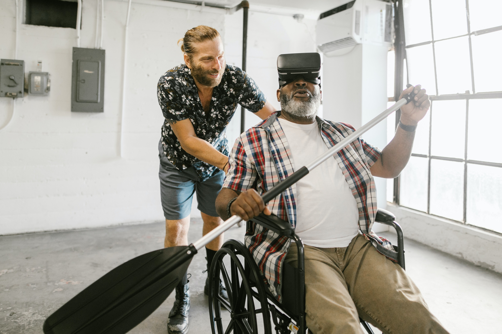

Definizione di intelligenza artificiale
L’intelligenza artificiale (IA) è l’abilità di una macchina di mostrare capacità umane quali il ragionamento, l’apprendimento, la pianificazione e la creatività. L’intelligenza artificiale permette ai sistemi di capire il proprio ambiente, mettersi in relazione con quello che percepisce e risolvere problemi, e agire verso un obiettivo specifico. Il computer riceve i dati (già preparati o raccolti tramite sensori, come una videocamera), li processa e risponde. I sistemi di IA sono capaci di adattare il proprio comportamento analizzando gli effetti delle azioni precedenti e lavorando in autonomia.